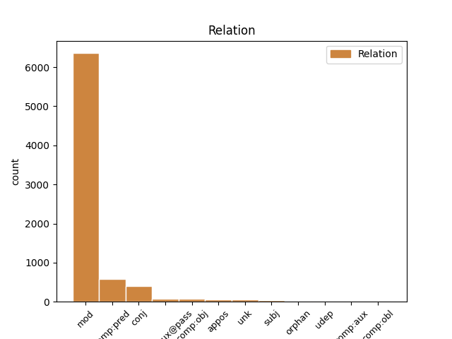
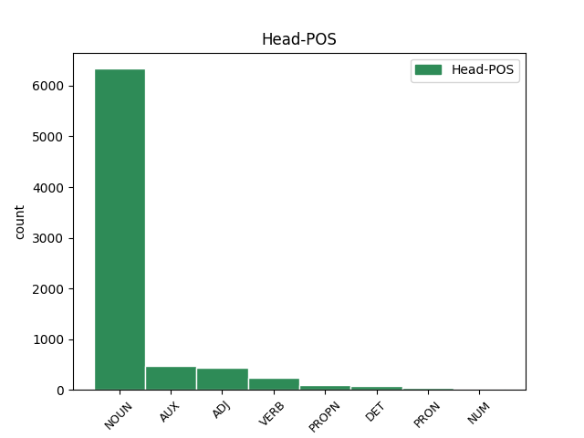
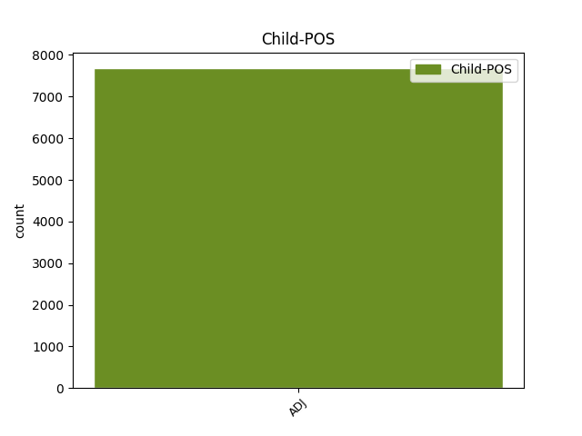

Distribution of features within this leaf



Agreement Rules sorted by frequency.
- When the dependent token is the modifer(mod) of the head token, and the dependent token is ADJ.
1 A _ _ _ _ 0 _ _ _
2 až _ _ _ _ 0 _ _ _
3 tu _ _ _ _ 0 _ _ _
4 vůbec _ _ _ _ 0 _ _ _
5 nebudu _ _ _ _ 0 _ _ _
6 , _ _ _ _ 0 _ _ _
7 přidám _ _ _ _ 0 _ _ _
8 ti _ _ _ _ 0 _ _ _
9 i _ _ _ _ 0 _ _ _
10 to ten DET PDNS4---------- Case=Acc|Gender=Neut|Number=Sing|PronType=Dem 0 _ _ _
11 poslední poslední ADJ AANS4----1A---- Case=Acc|Degree=Pos|Gender=Neut|Number=Sing|Polarity=Pos 10 mod _ SpaceAfter=No
12 . _ _ _ _ 0 _ _ _
1 Okna _ _ _ _ 0 _ _ _
2 i _ _ _ _ 0 _ _ _
3 dveře _ _ _ _ 0 _ _ _
4 byly být AUX VpFP----R-AA--- Gender=Fem|Number=Plur|Polarity=Pos|Tense=Past|VerbForm=Part|Voice=Act 0 _ _ _
5 otevřené otevřený ADJ AAFP1----1A---- Case=Nom|Degree=Pos|Gender=Fem|Number=Plur|Polarity=Pos 4 comp:pred _ SpaceAfter=No
6 , _ _ _ _ 0 _ _ _
7 aby _ _ _ _ 0 _ _ _
8 by _ _ _ _ 0 _ _ _
9 jimi _ _ _ _ 0 _ _ _
10 mohl _ _ _ _ 0 _ _ _
11 proudit _ _ _ _ 0 _ _ _
12 svěží _ _ _ _ 0 _ _ _
13 večerní _ _ _ _ 0 _ _ _
14 vítr _ _ _ _ 0 _ _ _
15 . _ _ _ _ 0 _ _ _
1 " _ _ _ _ 0 _ _ _
2 Na _ _ _ _ 0 _ _ _
3 to _ _ _ _ 0 _ _ _
4 je _ _ _ _ 0 _ _ _
5 příliš _ _ _ _ 0 _ _ _
6 slabý slabý ADJ AAMS1----1A---- Animacy=Anim|Case=Nom|Degree=Pos|Gender=Masc|Number=Sing|Polarity=Pos 0 _ _ _
7 a _ _ _ _ 0 _ _ _
8 křehký křehký ADJ AAMS1----1A---- Animacy=Anim|Case=Nom|Degree=Pos|Gender=Masc|Number=Sing|Polarity=Pos 6 conj _ SpaceAfter=No
9 , _ _ _ _ 0 _ _ _
10 " _ _ _ _ 0 _ _ _
11 stěžovala _ _ _ _ 0 _ _ _
12 si _ _ _ _ 0 _ _ _
13 . _ _ _ _ 0 _ _ _
1 Ale _ _ _ _ 0 _ _ _
2 malé _ _ _ _ 0 _ _ _
3 okno _ _ _ _ 0 _ _ _
4 bylo být AUX VpNS----R-AA--- Gender=Neut|Number=Sing|Polarity=Pos|Tense=Past|VerbForm=Part|Voice=Act 0 _ _ _
5 vsazeno vsazený ADJ VsNS------AP--- Gender=Neut|Number=Sing|Polarity=Pos|Variant=Short|VerbForm=Part|Voice=Pass 4 comp:aux@pass _ _
6 tak _ _ _ _ 0 _ _ _
7 vysoko _ _ _ _ 0 _ _ _
8 , _ _ _ _ 0 _ _ _
9 že _ _ _ _ 0 _ _ _
10 zahlédl _ _ _ _ 0 _ _ _
11 jen _ _ _ _ 0 _ _ _
12 kousek _ _ _ _ 0 _ _ _
13 nebe _ _ _ _ 0 _ _ _
14 . _ _ _ _ 0 _ _ _
1 Ode _ _ _ _ 0 _ _ _
2 dne _ _ _ _ 0 _ _ _
3 , _ _ _ _ 0 _ _ _
4 kdy _ _ _ _ 0 _ _ _
5 Láďova _ _ _ _ 0 _ _ _
6 maminka _ _ _ _ 0 _ _ _
7 nastoupila _ _ _ _ 0 _ _ _
8 do _ _ _ _ 0 _ _ _
9 práce _ _ _ _ 0 _ _ _
10 , _ _ _ _ 0 _ _ _
11 život _ _ _ _ 0 _ _ _
12 sklouzl _ _ _ _ 0 _ _ _
13 do _ _ _ _ 0 _ _ _
14 normálních normální ADJ AAFP2----1A---- Case=Gen|Degree=Pos|Gender=Fem|Number=Plur|Polarity=Pos 0 _ _ _
15 , _ _ _ _ 0 _ _ _
16 běžných běžný ADJ AAFP2----1A---- Case=Gen|Degree=Pos|Gender=Fem|Number=Plur|Polarity=Pos 14 appos _ _
17 kolejí _ _ _ _ 0 _ _ _
18 . _ _ _ _ 0 _ _ _
1 Pak _ _ _ _ 0 _ _ _
2 se _ _ _ _ 0 _ _ _
3 vydala _ _ _ _ 0 _ _ _
4 dál _ _ _ _ 0 _ _ _
5 a _ _ _ _ 0 _ _ _
6 došla _ _ _ _ 0 _ _ _
7 až _ _ _ _ 0 _ _ _
8 k _ _ _ _ 0 _ _ _
9 domu _ _ _ _ 0 _ _ _
10 , _ _ _ _ 0 _ _ _
11 který _ _ _ _ 0 _ _ _
12 vypadal vypadat VERB VpIS----R-AA--- Animacy=Inan|Gender=Masc|Number=Sing|Polarity=Pos|Tense=Past|VerbForm=Part|Voice=Act 0 _ _ _
13 plný plný ADJ AAIS1----1A---- Animacy=Inan|Case=Nom|Degree=Pos|Gender=Masc|Number=Sing|Polarity=Pos 12 comp:obj _ _
14 blahobytu _ _ _ _ 0 _ _ _
15 a _ _ _ _ 0 _ _ _
16 bohatství _ _ _ _ 0 _ _ _
17 , _ _ _ _ 0 _ _ _
18 v _ _ _ _ 0 _ _ _
19 jeho _ _ _ _ 0 _ _ _
20 krásné _ _ _ _ 0 _ _ _
21 zahradě _ _ _ _ 0 _ _ _
22 byla _ _ _ _ 0 _ _ _
23 dokonce _ _ _ _ 0 _ _ _
24 i _ _ _ _ 0 _ _ _
25 studna _ _ _ _ 0 _ _ _
26 . _ _ _ _ 0 _ _ _
1 Ale _ _ _ _ 0 _ _ _
2 potom _ _ _ _ 0 _ _ _
3 si _ _ _ _ 0 _ _ _
4 koupíme _ _ _ _ 0 _ _ _
5 láhev _ _ _ _ 0 _ _ _
6 kořalky _ _ _ _ 0 _ _ _
7 a _ _ _ _ 0 _ _ _
8 půjdeme _ _ _ _ 0 _ _ _
9 za _ _ _ _ 0 _ _ _
10 ženskými _ _ _ _ 0 _ _ _
11 , _ _ _ _ 0 _ _ _
12 " _ _ _ _ 0 _ _ _
13 navrhoval navrhovat VERB VpMS----R-AA--- Animacy=Anim|Gender=Masc|Number=Sing|Polarity=Pos|Tense=Past|VerbForm=Part|Voice=Act 0 _ _ _
14 druhý druhý ADJ CrMS1---------- Animacy=Anim|Case=Nom|Gender=Masc|Number=Sing|NumType=Ord 13 unk _ SpaceAfter=No
15 . _ _ _ _ 0 _ _ _
1 Plameny _ _ _ _ 0 _ _ _
2 šlehaly _ _ _ _ 0 _ _ _
3 z _ _ _ _ 0 _ _ _
4 okna _ _ _ _ 0 _ _ _
5 v _ _ _ _ 0 _ _ _
6 hlavní _ _ _ _ 0 _ _ _
7 budově _ _ _ _ 0 _ _ _
8 , _ _ _ _ 0 _ _ _
9 sloužící sloužící ADJ AGMP1-----A---- Animacy=Anim|Aspect=Imp|Case=Nom|Gender=Masc|Number=Plur|Polarity=Pos|Tense=Pres|VerbForm=Part|Voice=Act 11 subj _ _
10 chvatně _ _ _ _ 0 _ _ _
11 pobíhali pobíhat VERB VpMP----R-AA--- Animacy=Anim|Gender=Masc|Number=Plur|Polarity=Pos|Tense=Past|VerbForm=Part|Voice=Act 0 _ _ _
12 sem _ _ _ _ 0 _ _ _
13 a _ _ _ _ 0 _ _ _
14 tam _ _ _ _ 0 _ _ _
15 . _ _ _ _ 0 _ _ _
1 Uběhly _ _ _ _ 0 _ _ _
2 dvě _ _ _ _ 0 _ _ _
3 pokojné _ _ _ _ 0 _ _ _
4 hodiny _ _ _ _ 0 _ _ _
5 na _ _ _ _ 0 _ _ _
6 pláži _ _ _ _ 0 _ _ _
7 , _ _ _ _ 0 _ _ _
8 moře _ _ _ _ 0 _ _ _
9 bylo _ _ _ _ 0 _ _ _
10 klidné _ _ _ _ 0 _ _ _
11 , _ _ _ _ 0 _ _ _
12 obloha obloha NOUN NNFS1-----A---- Case=Nom|Gender=Fem|Number=Sing|Polarity=Pos 0 _ _ _
13 modrá modrý ADJ AAFS1----1A---- Case=Nom|Degree=Pos|Gender=Fem|Number=Sing|Polarity=Pos 12 orphan _ SpaceAfter=No
14 , _ _ _ _ 0 _ _ _
15 všechno _ _ _ _ 0 _ _ _
16 nádherné _ _ _ _ 0 _ _ _
17 . _ _ _ _ 0 _ _ _
1 Poté _ _ _ _ 0 _ _ _
2 , _ _ _ _ 0 _ _ _
3 co _ _ _ _ 0 _ _ _
4 byly být AUX VpFP----R-AA--- Gender=Fem|Number=Plur|Polarity=Pos|Tense=Past|VerbForm=Part|Voice=Act 0 _ _ _
5 proti _ _ _ _ 0 _ _ _
6 němu _ _ _ _ 0 _ _ _
7 vznesené _ _ _ _ 0 _ _ _
8 výtky _ _ _ _ 0 _ _ _
9 přečteny přečtený ADJ VsFP------AP--- Gender=Fem|Number=Plur|Polarity=Pos|Variant=Short|VerbForm=Part|Voice=Pass 4 comp:aux _ SpaceAfter=No
10 , _ _ _ _ 0 _ _ _
11 odůvodněny _ _ _ _ 0 _ _ _
12 a _ _ _ _ 0 _ _ _
13 dostal _ _ _ _ 0 _ _ _
14 slovo _ _ _ _ 0 _ _ _
15 , _ _ _ _ 0 _ _ _
16 zeptal _ _ _ _ 0 _ _ _
17 se _ _ _ _ 0 _ _ _
18 předsedajícího _ _ _ _ 0 _ _ _
19 : _ _ _ _ 0 _ _ _
1 " _ _ _ _ 0 _ _ _
2 Přeji _ _ _ _ 0 _ _ _
3 si _ _ _ _ 0 _ _ _
4 , _ _ _ _ 0 _ _ _
5 " _ _ _ _ 0 _ _ _
6 řekl _ _ _ _ 0 _ _ _
7 zamyšleně _ _ _ _ 0 _ _ _
8 rybář _ _ _ _ 0 _ _ _
9 , _ _ _ _ 0 _ _ _
10 " _ _ _ _ 0 _ _ _
11 aby _ _ _ _ 0 _ _ _
12 bys _ _ _ _ 0 _ _ _
13 mě _ _ _ _ 0 _ _ _
14 udělal udělat VERB VpMS----R-AA--- Animacy=Anim|Gender=Masc|Number=Sing|Polarity=Pos|Tense=Past|VerbForm=Part|Voice=Act 0 _ _ _
15 tak _ _ _ _ 0 _ _ _
16 chytrým chytrý ADJ AAMS7----1A---- Animacy=Anim|Case=Ins|Degree=Pos|Gender=Masc|Number=Sing|Polarity=Pos 14 comp:obl _ SpaceAfter=No
17 , _ _ _ _ 0 _ _ _
18 že _ _ _ _ 0 _ _ _
19 má _ _ _ _ 0 _ _ _
20 dvě _ _ _ _ 0 _ _ _
21 zbývající _ _ _ _ 0 _ _ _
22 přání _ _ _ _ 0 _ _ _
23 budou _ _ _ _ 0 _ _ _
24 naprosto _ _ _ _ 0 _ _ _
25 dokonalá _ _ _ _ 0 _ _ _
26 . _ _ _ _ 0 _ _ _
27 " _ _ _ _ 0 _ _ _
1 A _ _ _ _ 0 _ _ _
2 pak _ _ _ _ 0 _ _ _
3 uviděl _ _ _ _ 0 _ _ _
4 jeden _ _ _ _ 0 _ _ _
5 kříž _ _ _ _ 0 _ _ _
6 , _ _ _ _ 0 _ _ _
7 mírně _ _ _ _ 0 _ _ _
8 zakrytý zakrytý ADJ AAIS4----1A---- Animacy=Inan|Case=Acc|Degree=Pos|Gender=Masc|Number=Sing|Polarity=Pos 0 _ _ _
9 ostatními ostatní ADJ AAIP7----1A---- Animacy=Inan|Case=Ins|Degree=Pos|Gender=Masc|Number=Plur|Polarity=Pos 8 udep _ SpaceAfter=No
10 , _ _ _ _ 0 _ _ _
11 který _ _ _ _ 0 _ _ _
12 se _ _ _ _ 0 _ _ _
13 mu _ _ _ _ 0 _ _ _
14 něčím _ _ _ _ 0 _ _ _
15 zamlouval _ _ _ _ 0 _ _ _
16 . _ _ _ _ 0 _ _ _
Disagree Examples:
1 Aby _ _ _ _ 0 _ _ _
2 by _ _ _ _ 0 _ _ _
3 odpověď _ _ _ _ 0 _ _ _
4 měla _ _ _ _ 0 _ _ _
5 smysl _ _ _ _ 0 _ _ _
6 , _ _ _ _ 0 _ _ _
7 je _ _ _ _ 0 _ _ _
8 dobré _ _ _ _ 0 _ _ _
9 odpovědět _ _ _ _ 0 _ _ _
10 si _ _ _ _ 0 _ _ _
11 , _ _ _ _ 0 _ _ _
12 proč _ _ _ _ 0 _ _ _
13 bych _ _ _ _ 0 _ _ _
14 byl _ _ _ _ 0 _ _ _
15 rád rád ADJ ACMS------A---- Animacy=Anim|Gender=Masc|Number=Sing|Polarity=Pos|Variant=Short 17 comp:pred _ _
16 svým _ _ _ _ 0 _ _ _
17 dítětem dítě NOUN NNNS7-----A---- Case=Ins|Gender=Neut|Number=Sing|Polarity=Pos 0 _ _ _
18 a _ _ _ _ 0 _ _ _
19 proč _ _ _ _ 0 _ _ _
20 bych _ _ _ _ 0 _ _ _
21 jím _ _ _ _ 0 _ _ _
22 rád _ _ _ _ 0 _ _ _
23 nebyl _ _ _ _ 0 _ _ _
24 . _ _ _ _ 0 _ _ _
1 Aby _ _ _ _ 0 _ _ _
2 by _ _ _ _ 0 _ _ _
3 odpověď _ _ _ _ 0 _ _ _
4 měla _ _ _ _ 0 _ _ _
5 smysl _ _ _ _ 0 _ _ _
6 , _ _ _ _ 0 _ _ _
7 je _ _ _ _ 0 _ _ _
8 dobré _ _ _ _ 0 _ _ _
9 odpovědět _ _ _ _ 0 _ _ _
10 si _ _ _ _ 0 _ _ _
11 , _ _ _ _ 0 _ _ _
12 proč _ _ _ _ 0 _ _ _
13 bych _ _ _ _ 0 _ _ _
14 byl _ _ _ _ 0 _ _ _
15 rád _ _ _ _ 0 _ _ _
16 svým _ _ _ _ 0 _ _ _
17 dítětem _ _ _ _ 0 _ _ _
18 a _ _ _ _ 0 _ _ _
19 proč _ _ _ _ 0 _ _ _
20 bych _ _ _ _ 0 _ _ _
21 jím on PRON PPNS7--3------- Case=Ins|Gender=Neut|Number=Sing|Person=3|PronType=Prs 0 _ _ _
22 rád rád ADJ ACMS------A---- Animacy=Anim|Gender=Masc|Number=Sing|Polarity=Pos|Variant=Short 21 comp:pred _ _
23 nebyl _ _ _ _ 0 _ _ _
24 . _ _ _ _ 0 _ _ _
1 Po _ _ _ _ 0 _ _ _
2 dvou _ _ _ _ 0 _ _ _
3 týdnech týden NOUN NNIP6-----A---- Animacy=Inan|Case=Loc|Gender=Masc|Number=Plur|Polarity=Pos 0 _ _ _
4 první první ADJ CrFS4---------- Case=Acc|Gender=Fem|Number=Sing|NumType=Ord 3 unk _ SpaceAfter=No
5 . _ _ _ _ 0 _ _ _
1 Nejsou _ _ _ _ 0 _ _ _
2 to _ _ _ _ 0 _ _ _
3 věty věta NOUN NNFP1-----A---- Case=Nom|Gender=Fem|Number=Plur|Polarity=Pos 0 _ _ _
4 , _ _ _ _ 0 _ _ _
5 skutky _ _ _ _ 0 _ _ _
6 , _ _ _ _ 0 _ _ _
7 pohledy _ _ _ _ 0 _ _ _
8 nevinné vinný ADJ AAIP1----1N---- Animacy=Inan|Case=Nom|Degree=Pos|Gender=Masc|Number=Plur|Polarity=Neg 3 mod _ _
9 anebo _ _ _ _ 0 _ _ _
10 vesele _ _ _ _ 0 _ _ _
11 bezvýznamné _ _ _ _ 0 _ _ _
12 , _ _ _ _ 0 _ _ _
13 zatímco _ _ _ _ 0 _ _ _
14 my _ _ _ _ 0 _ _ _
15 v _ _ _ _ 0 _ _ _
16 nich _ _ _ _ 0 _ _ _
17 rozeznáváme _ _ _ _ 0 _ _ _
18 ostny _ _ _ _ 0 _ _ _
19 ? _ _ _ _ 0 _ _ _
1 Četl _ _ _ _ 0 _ _ _
2 jsem _ _ _ _ 0 _ _ _
3 ta _ _ _ _ 0 _ _ _
4 jména _ _ _ _ 0 _ _ _
5 mechanicky _ _ _ _ 0 _ _ _
6 , _ _ _ _ 0 _ _ _
7 tak _ _ _ _ 0 _ _ _
8 jako _ _ _ _ 0 _ _ _
9 se _ _ _ _ 0 _ _ _
10 podroušení _ _ _ _ 0 _ _ _
11 lidé _ _ _ _ 0 _ _ _
12 často _ _ _ _ 0 _ _ _
13 upnou _ _ _ _ 0 _ _ _
14 na _ _ _ _ 0 _ _ _
15 nějakou _ _ _ _ 0 _ _ _
16 jednoduchou _ _ _ _ 0 _ _ _
17 činnost _ _ _ _ 0 _ _ _
18 , _ _ _ _ 0 _ _ _
19 kterou _ _ _ _ 0 _ _ _
20 do _ _ _ _ 0 _ _ _
21 omrzení _ _ _ _ 0 _ _ _
22 opakují _ _ _ _ 0 _ _ _
23 , _ _ _ _ 0 _ _ _
24 procházel _ _ _ _ 0 _ _ _
25 jsem _ _ _ _ 0 _ _ _
26 uličkami _ _ _ _ 0 _ _ _
27 mezi _ _ _ _ 0 _ _ _
28 hroby _ _ _ _ 0 _ _ _
29 v _ _ _ _ 0 _ _ _
30 nedotčeném _ _ _ _ 0 _ _ _
31 sněhu _ _ _ _ 0 _ _ _
32 , _ _ _ _ 0 _ _ _
33 taková _ _ _ _ 0 _ _ _
34 podivná _ _ _ _ 0 _ _ _
35 chvíle _ _ _ _ 0 _ _ _
36 , _ _ _ _ 0 _ _ _
37 skoro _ _ _ _ 0 _ _ _
38 bych _ _ _ _ 0 _ _ _
39 řekl říci VERB VpMS----R-AA--- Animacy=Anim|Gender=Masc|Number=Sing|Polarity=Pos|Tense=Past|VerbForm=Part|Voice=Act 0 _ _ _
40 mystická mystický ADJ AAFS1----1A---- Case=Nom|Degree=Pos|Gender=Fem|Number=Sing|Polarity=Pos 39 unk _ SpaceAfter=No
41 , _ _ _ _ 0 _ _ _
42 jen _ _ _ _ 0 _ _ _
43 jas _ _ _ _ 0 _ _ _
44 a _ _ _ _ 0 _ _ _
45 ticho _ _ _ _ 0 _ _ _
46 . _ _ _ _ 0 _ _ _
47 . _ _ _ _ 0 _ _ _
48 . _ _ _ _ 0 _ _ _